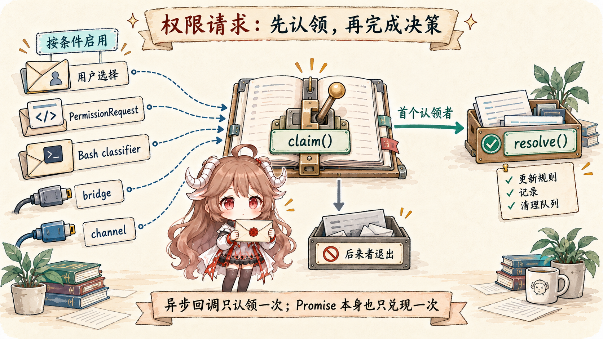

本文核对的是公开镜像的 2026 年 3 月 31 日源码快照。该镜像并非 Anthropic 官方源码发布；下文描述这一固定快照，不能据此断言当前发行版具有相同实现。官方文档用于说明产品或 API 合同。
上一篇把工具调用拆成四层：模型产生 tool_use，
query() 收集申请，runTools() 调度，runToolUse() 执行单个工具。
这一篇就停在 runToolUse() 中间那道门：工具已经找到了，参数也过了 schema，
但本地动作还没有发生。这个窗口，就是权限系统真正工作的地方。
先说结论：Claude Code 的权限不是“弹窗确认”，而是把所有副作用都转换成 allow、deny、ask 三种决策。 弹窗只是 ask 在交互主线程上的一种处理方式；后台 agent、auto mode、PermissionRequest hook、 swarm worker、bridge 和 channel 都有自己的处理路径。
这一篇的主线可以压成一句话：tool_use 进入工具执行后，先跑 PreToolUse hook，
再通过 resolveHookPermissionDecision() 选择 hook 决策或正常权限路径；
canUseTool() 读取 ToolPermissionContext、工具自身检查、模式和规则，
最后返回 allow / deny / ask。只要不是 allow，客户端不会执行副作用，而是生成错误型 tool_result。
阅读目标：这篇只追工具执行前的权限判断：规则和 mode 负责什么，工具自己的
checkPermissions() 负责什么，hook / classifier / user 什么时候能改决策，deny 如何回到下一轮模型。
读完应该能回答：为什么 bypass 也不是无条件通行，为什么后台路径不能弹窗，以及为什么拒绝不是沉默失败。
产品层证据来自 Claude Code 的 settings 文档、 hooks 文档、 security 文档 和 IAM 文档； 源码层来自 Rememorio/claude-code 公开镜像。 本文只把客户端源码可见的决策顺序写成事实；auto classifier 的模型策略、服务端安全策略和 provider 内部实现不从客户端代码里硬推。
这篇回答五个问题：
ToolPermissionContext里到底保存了哪些会影响副作用的状态？hasPermissionsToUseToolInner()为什么先 deny / ask，再看 bypass / allow？- auto mode、dontAsk、headless agent 和 bypass 分别改变了哪一层？
- 交互弹窗为什么要和 hook、classifier、bridge、channel 赛跑？
- 权限拒绝以后，为什么还要回填
is_error的tool_result？
type PermissionDecision = "allow" | "deny" | "ask"
tool_use
-> PreToolUse hook
-> resolveHookPermissionDecision(...)
-> rule-checked hook result OR canUseTool(...)
-> allow | deny | ask
-> execute tool | return denial result | suspend for user choice一、权限上下文保存本轮规则与状态
权限判断读取的状态集中在
ToolPermissionContext。
它不是一个布尔开关，而是一组会共同影响结果的字段：当前 mode、allow / deny / ask 规则、额外工作目录、
bypass 是否可用、auto mode 是否可用、是否避免权限弹窗、是否要先等自动检查。
ToolPermissionContext（节选）
mode: default / plan / acceptEdits / bypassPermissions / dontAsk
alwaysAllowRules / alwaysDenyRules / alwaysAskRules
additionalWorkingDirectories
shouldAvoidPermissionPrompts
isBypassPermissionsModeAvailable / isAutoModeAvailable1.1 mode 不是唯一输入
权限模式类型
里能看到外部可用模式：default、plan、acceptEdits、
bypassPermissions、dontAsk；内部还可能有受功能开关控制的 auto。
但 mode 只是其中一个输入。规则、目录、安全检查、工具实现自己的判断，都会影响最后结果。
这也是读权限源码最容易踩的坑：不要看到 bypassPermissions 就以为所有动作都能过。
源码明确把 deny 规则、工具自身 deny、requiresUserInteraction、content-specific ask 和 safety check 放在 bypass 前面。
1.2 权限更新可以只影响本轮，也可以写入设置
权限弹窗或 hook 允许时，可能带回 permission updates。
applyPermissionUpdate()
支持改 mode、增加/替换/删除规则、增加/删除额外目录。
如果目的地是 user / project / local settings，
更新还可以持久化。
所以“本次允许”和“以后都允许”不是同一件事。前者只让当前请求继续；后者会新增权限规则，并按所选范围写回 user、project 或 local settings。
二、权限判断按固定顺序执行
权限判断的内核是
hasPermissionsToUseToolInner()。
这段代码最值得看的不是某个 if，而是顺序。它先检查“必须停”的东西，再看“可以放行”的东西。
2.1 deny 和 ask 先于工具默认放行
源码先查整个工具是否命中 deny rule；命中就直接返回 deny。
接着查 ask rule；如果 Bash 沙箱自动允许条件不满足，就返回 ask。
然后才调用工具实现自己的 checkPermissions()。
也就是说，项目或用户配置的硬规则先于工具内部默认策略。
工具自己的检查也不是摆设。如果工具实现返回 deny，直接 deny；如果工具要求 user interaction，即使后面有 bypass 模式也会保留 ask。 工具更了解自己的输入，所以会在这里检查路径、命令、沙箱和敏感文件等具体风险。
2.2 bypass 也绕不过内容级 ask 和 safety check
两类 ask 会优先于 bypass。 第一类是 content-specific ask rule，比如某个命令前缀必须确认；第二类是 safety check， 注释里明确说 `.git/`、`.claude/`、`.vscode/`、shell configs 这类路径是 bypass-immune。
这里遵守的规则很简单：模式可以改变默认体验，但不能覆盖已经明确配置或工具识别出的高风险操作。
bypassPermissions 是“默认不问”，不是“所有安全闸都失效”。
这里保留的是 ask，而不是直接 deny；之后由外层模式决定如何处理询问。另一个细节是 plan 模式的 bypass 判断：如果当前会话保留了 bypass 可用状态，plan 也可能走这一放行分支。
2.3 最后的 passthrough 会变成 ask
走过 deny、ask、工具检查、safety、bypass、allow rule 以后，如果工具结果还是 passthrough，
源码会把它转换成 ask，并生成 permission request message。
这就是 default mode 下最常见的用户确认来源：不是每个工具都显式说“要问”，而是没有足够理由 allow 时，runtime 把决定交给用户。
| 阶段 | 更像什么 | 保护的边界 |
|---|---|---|
| deny rule / tool deny | 硬拒绝 | 用户、项目或工具明确禁止的动作。 |
| ask rule / safety check | 强制人工关口 | 敏感路径、危险命令、内容级规则。 |
| bypass / allow rule | 默认放行 | 已选择或已配置的低摩擦路径。 |
| passthrough to ask | 默认确认 | 没有明确规则允许时，把决定交给用户或后续自动检查。 |
三、外层会把 ask 改造成不同路径
hasPermissionsToUseToolInner() 给出初步结果后，外层
hasPermissionsToUseTool()
还会根据运行模式改造 ask。这里正是 dontAsk、auto mode、headless agent 的分水岭。
3.1 dontAsk 把 ask 变成 deny
如果结果是 ask，并且当前 mode 是 dontAsk，
源码直接返回 deny。
这不是“更严格的 default”，而是明确禁止交互确认：需要确认的动作全部拒绝。
3.2 auto mode 先走便宜路径，再跑 classifier
auto mode 不是所有 ask 都丢给模型分类器。
源码先排除不可自动批准的 safety check 和要求用户交互的工具；PowerShell 在特定功能开关未启用时也要求用户明确授权。
然后才尝试 acceptEdits fast path、安全工具 allowlist，最后调用 classifyYoloAction()。
classifier blocked、unavailable、transcript too long 都有不同 fallback 或 fail-closed 行为。
这说明 auto mode 更像“自动化权限决策器”，不是“自动允许”。它仍然围着 ask 的结果工作，并且保留拒绝、降级和中止路径。
3.3 没有弹窗能力时，hook 还有一次机会
后台或 headless 路径不能弹窗。源码里如果 shouldAvoidPermissionPrompts 为 true，
会先运行
PermissionRequest hooks；
如果 hook 没给出 allow / deny，才自动 deny。
这让自动化环境有机会通过预先配置的 hook 决策，但不会卡在一个没人能点的弹窗上。
PreToolUse 的 allow 还存在独立快路：resolveHookPermissionDecision()保留 settings deny/ask，却不总是重跑完整权限函数。工具需要交互且 hook 没有用 updatedInput 满足交互，或 requireCanUseTool 被设置时，才强制正常回调。图中的正常权限栈不能冒充所有 hook 分支。
这里的checkRuleBasedPermissions()仍会解析输入 schema 并运行 tool.checkPermissions()，保留工具级 deny、内容规则 ask 和 safetyCheck ask；它跳过的是完整的模式与默认放行流程，并非只匹配 settings。
四、交互弹窗其实是一场赛跑
真正需要 ask 且处在交互主线程时，useCanUseTool() 会进入
handleInteractivePermission()。
这时你看到的弹窗只是队列里的一个 ToolUseConfirm；它背后同时存在用户选择、hook、bash classifier、
bridge 回调、channel 回调等多个可能的决策来源。

4.1 resolve-once 保护“只决策一次”
createResolveOnce()
用 claim() / resolve() 防止多个异步来源同时完成。
弹窗队列项
提供 onAllow、onReject、onAbort、recheckPermission 等回调；
每个回调在真正 resolve 前都要先 claim。
这保护的是决策回调中的设置更新、日志和队列清理只由一个来源执行。用户与 classifier 同时批准时，claim() 在任何 await 之前抢占请求，后来者退出。JavaScript Promise 本来就只兑现一次；不能据此声称重复 resolve 本身会把工具执行两次。
4.2 hook 和 classifier 可以抢在用户之前完成
如果不是 coordinator worker，交互处理会异步跑
PermissionRequest hook；
如果是 Bash 且存在 pending classifier check，还会异步跑
classifier check。
只要用户还没交互、请求还没 resolve，hook 或 classifier 的 allow/deny 可以先完成并关闭队列项。
4.3 coordinator 和 swarm 是不同的非主线程处理
Coordinator worker 的路径会先等待 hook，再等待 classifier，仍然不成才落回交互弹窗；
这在
handleCoordinatorPermission()
的注释里写得很清楚。Swarm worker 则先试 classifier，再把请求通过 mailbox 转给 leader，
这条路径在
handleSwarmWorkerPermission()。
所以 ask 并不天然等于“当前终端弹窗”。ask 是一个需要决策的状态，至于谁来决策，要看当前线程、worker 类型、是否有 UI、是否有 bridge 或 channel。
五、拒绝结果也要告诉模型
权限结果回到 toolExecution.ts 后，如果不是 allow，
客户端不会执行工具。
它会构造一条 user message，里面包含 is_error: true 的 tool_result，
并且使用原来的 toolUseID。也就是说，拒绝不是沉默失败，而是模型下一轮能看到的事实。
{
"role": "user",
"content": [{
"type": "tool_result",
"tool_use_id": "A",
"content": "Permission denied",
"is_error": true
}]
}5.1 deny 的 message 是给下一轮模型的约束
permissionDecision.message 会进入 tool_result 的 content。
如果 PreToolUse hook 阻止继续且没有详细消息，源码会生成类似“Execution stopped by PreToolUse hook”的错误文本。
用户拒绝时的反馈、hook 拒绝原因、auto classifier 拒绝原因，也都可以成为下一轮模型的输入约束。
5.2 PermissionDenied hook 可以给 retry hint
auto mode classifier 拒绝后，源码还会跑
PermissionDenied hooks。
如果 hook 返回 retry，客户端会额外给模型一条 meta user message，提示它可以重试。
这说明“拒绝”也不是一个绝对终点：它可以改变下一轮策略，但仍然不能越过当前这次副作用。
六、把权限判断归纳成几条规则
| 看到的现象 | 源码里的实际行为 | 别误读成 |
|---|---|---|
| 弹出权限确认 | ask 在交互主线程上的 UI 处理。 | 权限系统只有弹窗。 |
| bypassPermissions | 放行默认路径，但 deny、content ask、safety check 仍优先。 | 所有副作用无条件允许。 |
| dontAsk | 把 ask 转成 deny。 | 静默允许或静默跳过。 |
| auto mode | 先走 fast path 和 allowlist，再用 classifier 决策。 | 自动允许所有命令。 |
| 后台 agent 无弹窗 | PermissionRequest hook 先决策，没人决策就自动 deny。 | 后台路径可以无限等待用户。 |
| 权限拒绝 | 生成 is_error 的 tool_result 回到下一轮。 |
只是 UI 上取消了一次操作。 |
到这里再回头看工具调用，就能分清三件事：模型能提出什么、客户端能执行什么、当前规则允许什么。 Claude Code 的权限系统不是为了让用户多点几次按钮，而是让每次本地操作都有明确结果：执行、拒绝，或等待用户决定。
后面读命令、skills 和 MCP 时，还会遇到同一个问题：可调用的能力越多，就越需要为文件、命令和外部服务分别定义权限规则。 真正需要控制的不是“模型知道一个工具名”，而是这个工具被调用后能否改变本地或远端状态。
参考源码与文档
- Rememorio/claude-code 公开镜像
- Claude Code settings 文档
- Claude Code hooks 文档
- Claude Code security 文档
- Claude Code IAM 文档
- Tool.ts：ToolPermissionContext
- types/permissions.ts：permission modes
- PermissionUpdate.ts：apply permission updates
- PermissionUpdate.ts：persist permission updates
- permissions.ts：hasPermissionsToUseToolInner
- permissions.ts：hasPermissionsToUseTool outer transforms
- permissions.ts：headless PermissionRequest hooks
- toolExecution.ts：permission boundary and denied result
- toolExecution.ts：PermissionDenied hooks
- useCanUseTool.tsx：permission function
- PermissionContext.ts：createResolveOnce
- PermissionContext.ts：hooks, allow and deny helpers
- interactiveHandler.ts：permission queue callbacks
- interactiveHandler.ts：hook and classifier race
- coordinatorHandler.ts：coordinator permission flow
- swarmWorkerHandler.ts：swarm worker permission flow